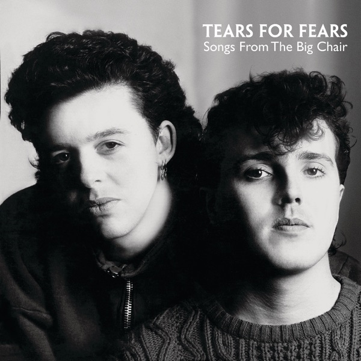

Songs From The Big Chair
Tears For Fears
Upgrade idea: This 2014 Mercury 180g Optimal pressing is a solid modern reissue and a significant step up from record club copies in surface quality. The audiophile benchmark remains the **Mobile Fidelity MFSL 1-265** (Original Master Recording, 1989 US) — half-speed mastered from the original analog tapes. For the original 1985 sound, the Greg Calbi / Sterling Sound retail pressings (e.g. r438688 Allied or r2106689 Hauppauge) are preferred by collectors who want the unmodified first-generation master.
- Original release
- 1985
- Pressing year
- 2014
- Country
- Europe
- Format
- Vinyl LP, Album, Reissue, Stereo (180 Gram)
- Label / Cat#
- Mercury – 3794995 / Universal Music Group – 3794995
- Genres
- Rock, Pop
- Styles
- Pop Rock
- Discogs release
- 6298468
- Discogs master
- 43063
- Apple Music
- Songs from the Big Chair
- Wikipedia
- Songs From The Big Chair
Production notes
Tracklist (Discogs)
| A1 | Shout | 6:31 |
| A2 | The Working Hour | 6:31 |
| A3 | Everybody Wants To Rule The World | 4:10 |
| A4 | Mothers Talk | 5:07 |
| B1 | I Believe | 4:54 |
| B2 | Broken | 2:38 |
| B3 | Head Over Heels | 5:02 |
| B4 | Listen | 6:49 |
Tracklist (Apple Music)
| 1 | Shout | 6:32 |
| 2 | The Working Hour | 6:31 |
| 3 | Everybody Wants to Rule the World | 4:11 |
| 4 | Mothers Talk | 5:06 |
| 5 | I Believe | 4:55 |
| 6 | Broken | 2:38 |
| 7 | Head Over Heels / Broken | 5:02 |
| 8 | Listen | 6:53 |
Personnel & credits
- Curt Smith — Bass Guitar, Vocals
- Manny Elias — Drums
- David Bascombe — Engineer
- Roland Orzabal — Guitar, Keyboards, Vocals
- Ian Stanley — Keyboards
- Paul King (8) — Management
- Tim O'Sullivan — Photography By [Cover]
- Chris Hughes — Producer
Identifiers
- Barcode: 602537949953 (String)
- Barcode: 6 02537 94995 3
- Rights Society: BIEM/SDRM
- Matrix / Runout: BE64838-01 A2 V= 3794995 (Side A, variant 1)
- Matrix / Runout: BE64838-01 B1 V+ 3794995 (Side B, variant 1)
- Matrix / Runout: BE64838-01 A2 X1 3794995 (Side A, variant 2)
- Matrix / Runout: BE64838-01 B1 - 1 3794995 (Side B, variant 2)
- Matrix / Runout: BE64838-01 A2 3794995 T+∧ (Side A, variant 3)
- Matrix / Runout: BE64838-01 B1 I∧∧ 3794995 (Side B, variant 3)
Notes
Includes voucher to download MP3 version of the album.
℗ 2014 Mercury Records Limited. © 2014 Mercury Records Limited.
Made in EU.
All runouts are hand etched. Plating symbols are mirrored.
Notes & discrepancies
- Release year differs: your pressing=2014, Apple Music edition=1985. Apple Music typically streams the most recent remaster.
Songs From The Big Chair is Tears For Fears’ second studio album, released in February 1985 on Mercury Records, and the record that made Roland Orzabal and Curt Smith genuine global stars. Named after the therapist’s chair in the 1976 film Sybil, the album arrived as a polished, orchestrated expansion of the new-wave synth-pop sound of their debut, with producer Chris Hughes and engineer Dave Bascombe delivering a lush, layered sonic palette that still sounds enormous today. “Shout” and “Everybody Wants to Rule the World” became two of the defining singles of 1985, both reaching #1 in the US; “Head Over Heels” and “Mothers Talk” rounded out a near-perfect tracklist. The album reached #1 in both the UK and US, certified 4× platinum.
Musically, the record is a masterclass in production craft — the rhythm programming, string arrangements, and layered keyboards create a dense but never claustrophobic sound. Ian Stanley’s keyboards and Orzabal’s guitar give it texture beyond pure synthpop, and tracks like “The Working Hour” (with Mel Collins on saxophone) and the closing “Listen” (with operatic vocals by Marilyn David) show genuine compositional ambition.
This 2014 European reissue was released on Mercury Records (℗ © 2014 Mercury Records Limited) as a standard 180g LP with a download voucher. Pressed by Optimal Media GmbH in Germany (plant code
BE64838), confirmed by the hand-etched matrixBE64838-01 A2/BE64838-01 B1. Optimal is one of Europe’s premier pressing plants, known for consistent quality and low noise floors on modern reissues.About this 2014 EU pressing (Vinyl, LP, Reissue, 180g): Mercury catalog 3794995, 2014 reissue. 180 gram. Pressed by Optimal Media GmbH, Germany. Includes MP3 download voucher. Made in EU. Barcode 602537949953. Matrix BE64838-01 A2 / BE64838-01 B1.